Personal Training
Certificate in Personal Training
Gym-based coaching, movement quality, strength, and confidence building
About We Are Fitness
We Are Fitness was created to make strength, confidence, and healthy habits feel more achievable. It is a space where people can feel welcomed, supported, and capable, because real progress starts when you feel comfortable enough to begin.
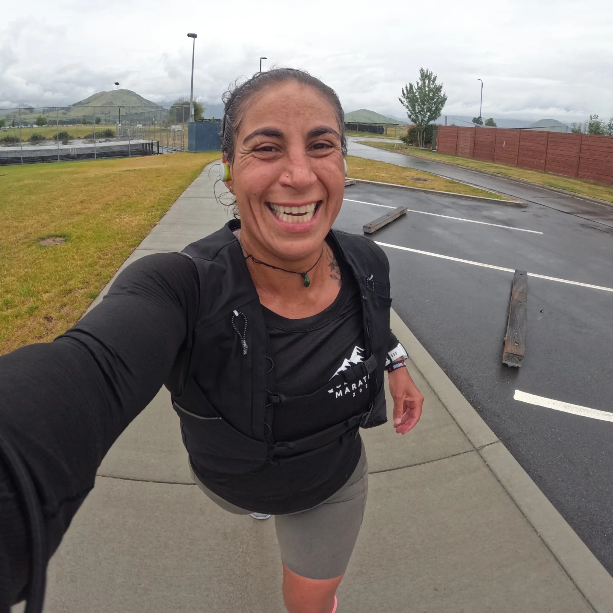


My Story
Sport, resilience, and the search for real purpose shaped the way I coach today.
I’m Caro and sport has always been a huge part of my life. Not just something I do, but something I truly love.
My journey started young, inspired by my mum. She believed deeply in what sport can do, physically and mentally. When I was 5 y/o I started with synchronized swimming, and over time I became part of the Chilean national team, representing my country for almost 12 years.
That chapter ended when I started university, but my love for sport didn’t. I moved into water polo, joined an incredible team, and again had the opportunity to represent Chile.
Sport was always there. But I still felt like something was missing.
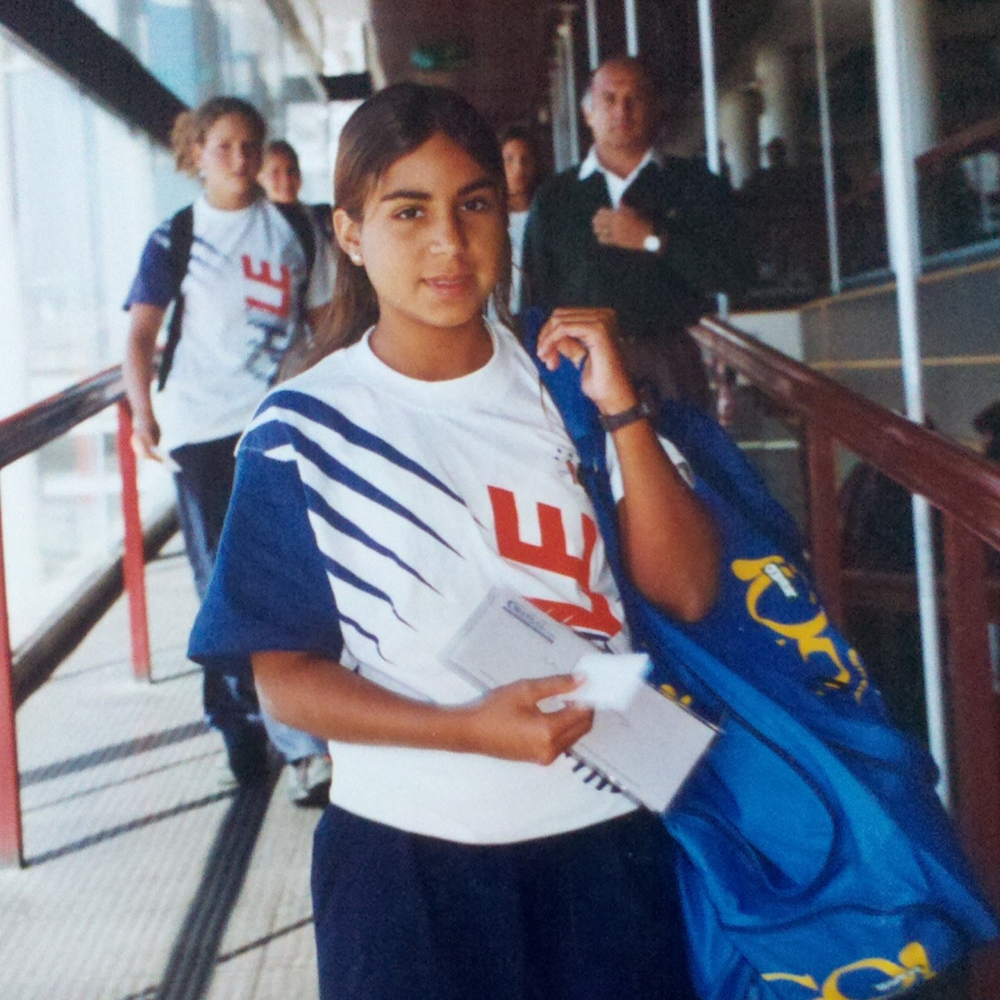
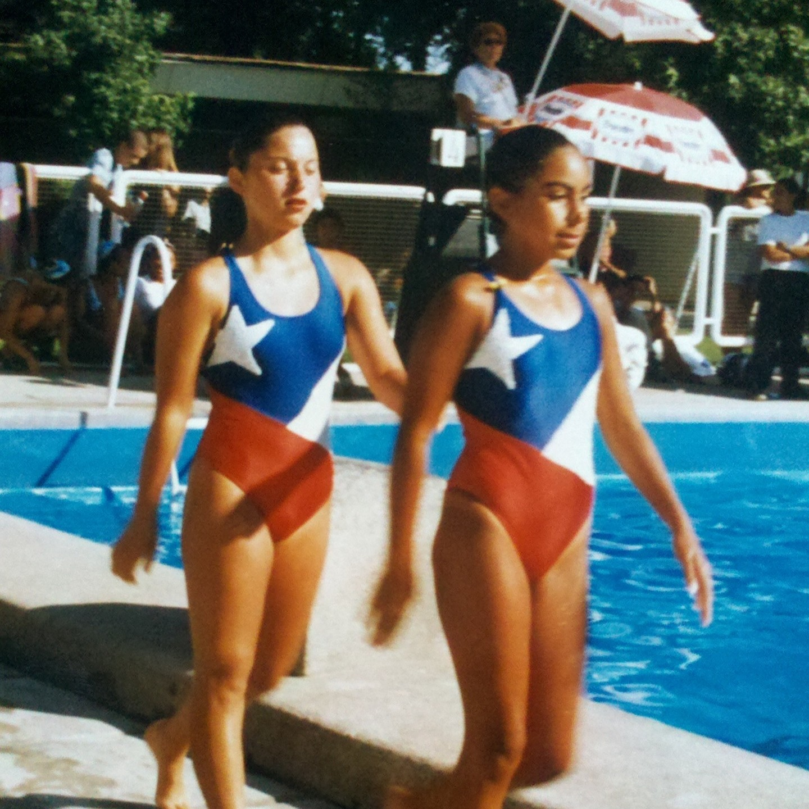
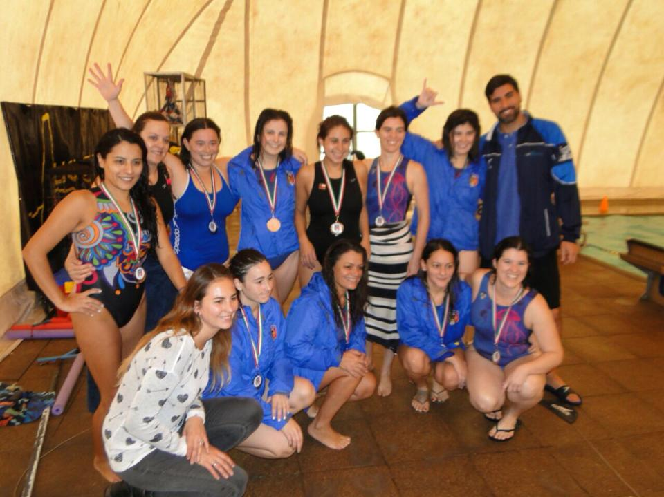
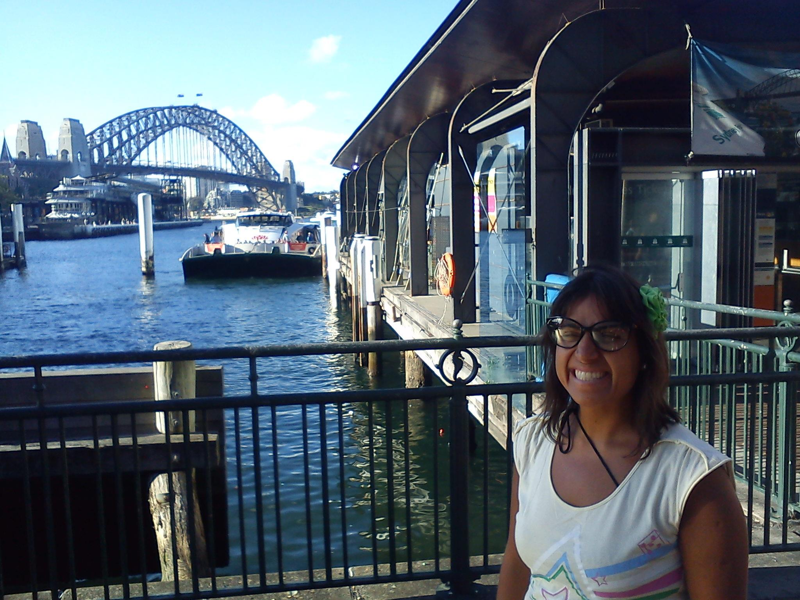
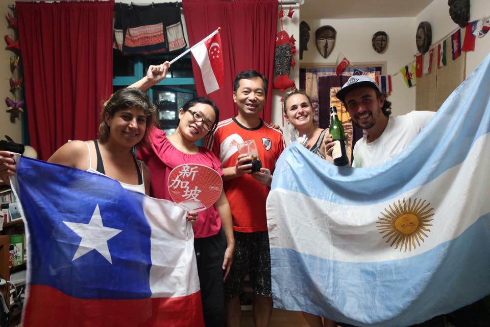
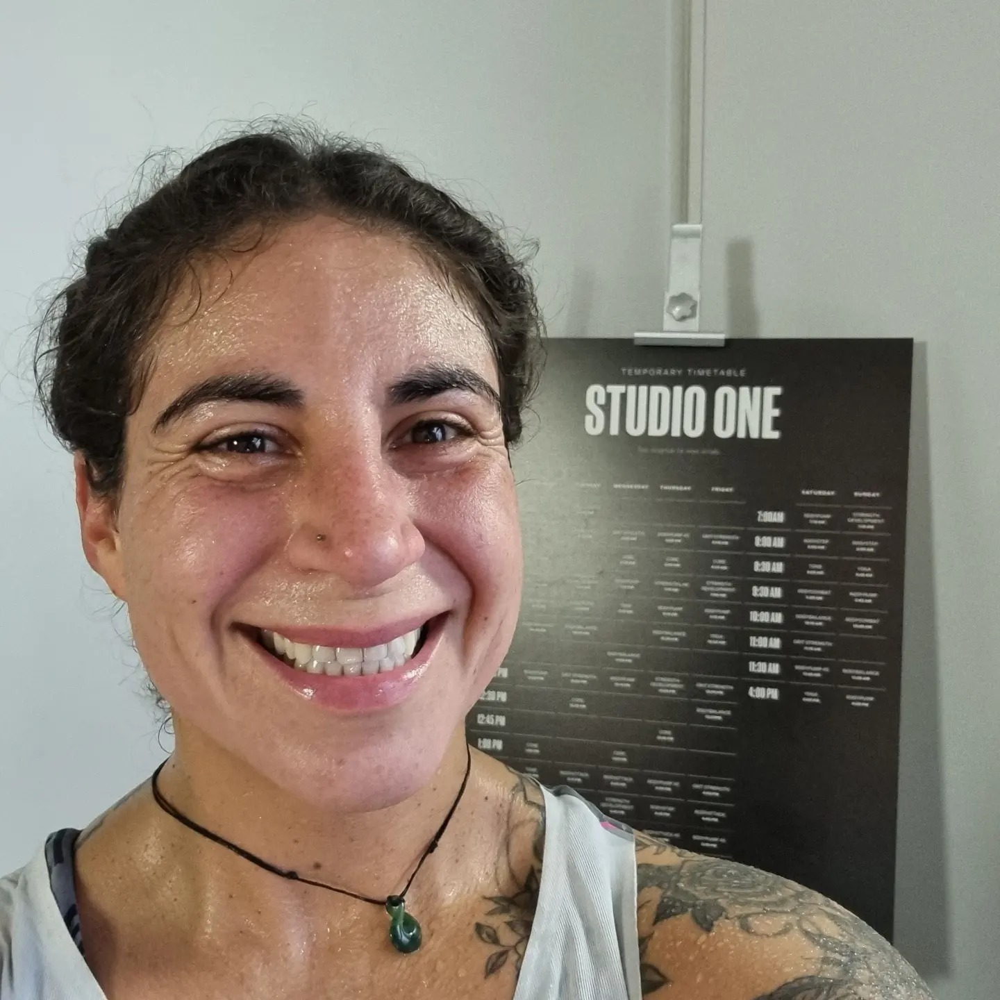
After graduating, I made a decision that would change everything.
I created a plan to find my real passion, something I truly loved, something that didn’t feel like work. A life where you don’t need holidays from your job, because it is exactly where you want to be. That journey brought me to New Zealand.
And honestly… it was hard. I arrived with zero English. I couldn’t find a job for months, hold conversations, or even express myself. It was one of the most frustrating and lonely times of my life.
Despite having a degree and a strong background, I started cleaning toilets, because that was the only job I could get.
I thought about giving up many times. Going back home. Starting again somewhere easier.
But I didn’t... The dream of finding my passion was bigger.
Training had always been my safe place, but this time something clicked. I took my first Les Mills class… and I knew instantly:
This is it. This is what I want to do.
From that moment, I committed fully.
I went back to study, completed my fitness diploma, improved my English, and fought for the visa that would allow me to work as a coach.
It took almost 6 years to teach my first class.
There were setbacks, doubts, and moments where I almost gave up, but one thing never changed:
I never stopped training.
Training became my grounding, my mental health, and my identity.
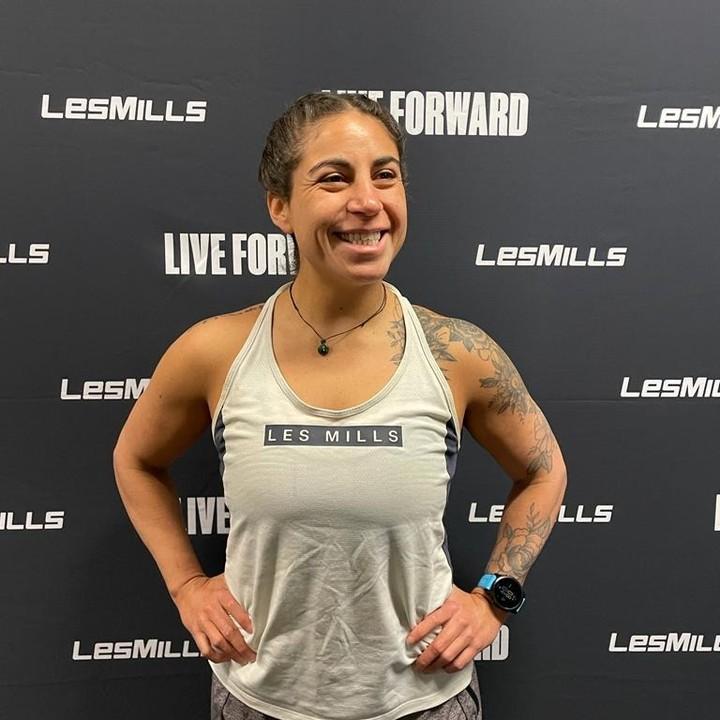
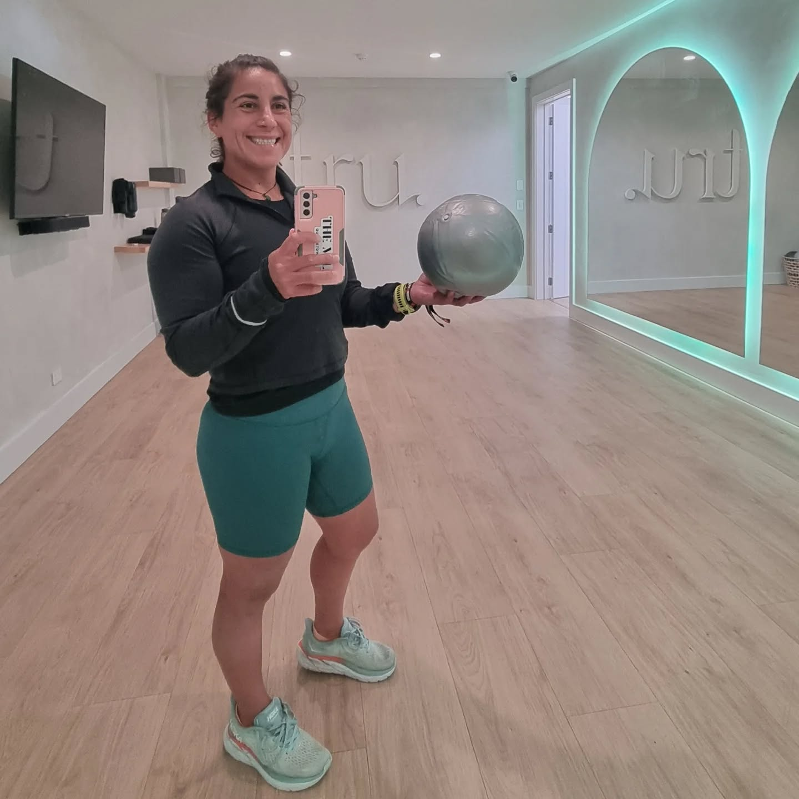
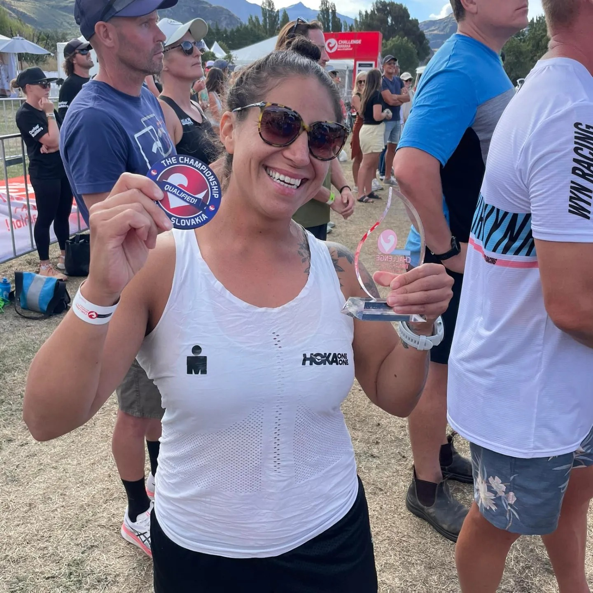

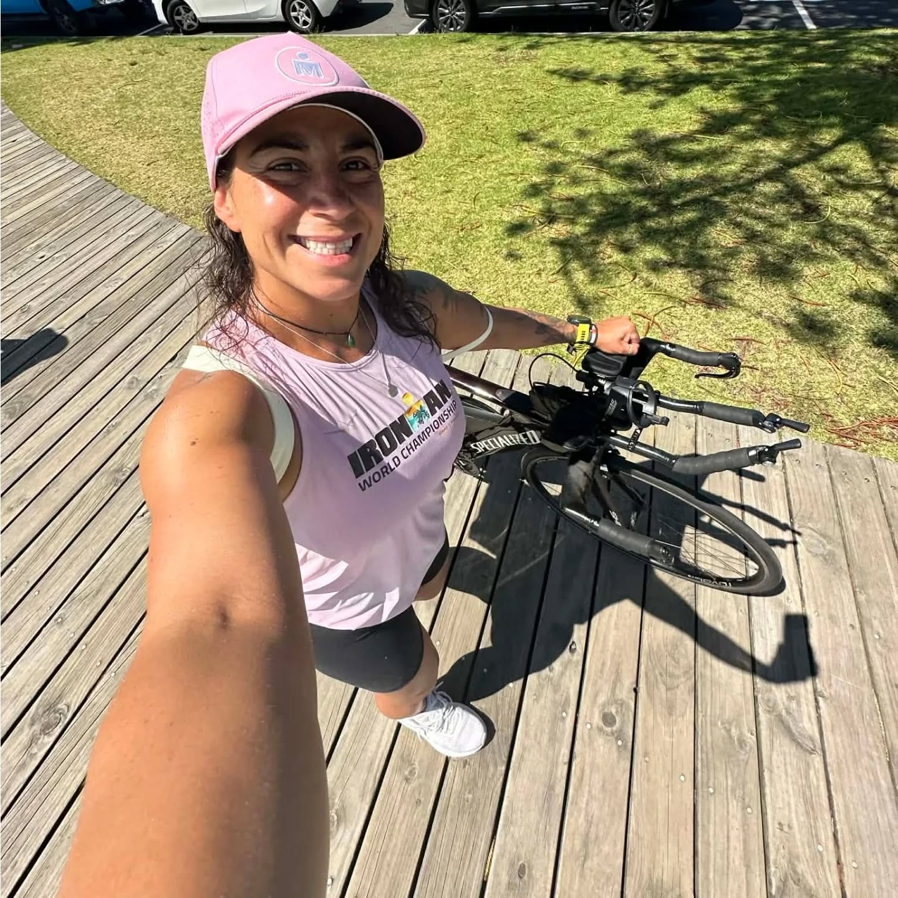
Everything I have lived through shaped the way I coach today.
I know what it feels like to start from zero. To doubt yourself. To feel out of place. To work hard for something that takes longer than you expected.
That is why We Are Fitness exists.
I wanted to create a space where people feel supported from the beginning. A place where progress feels possible, where people are welcomed as they are, and where coaching is built on empathy, structure, and real life.
Endurance Athlete
Coaching is not just something I teach, it is something I live every day.
From representing Chile in synchronized swimming and water polo to competing in endurance events, sport has always been part of my life.
I understand the process, the discipline, the setbacks, and the consistency... because I live it too.
That experience allows me to coach with empathy, structure, and a real understanding of how to balance training with everyday life.

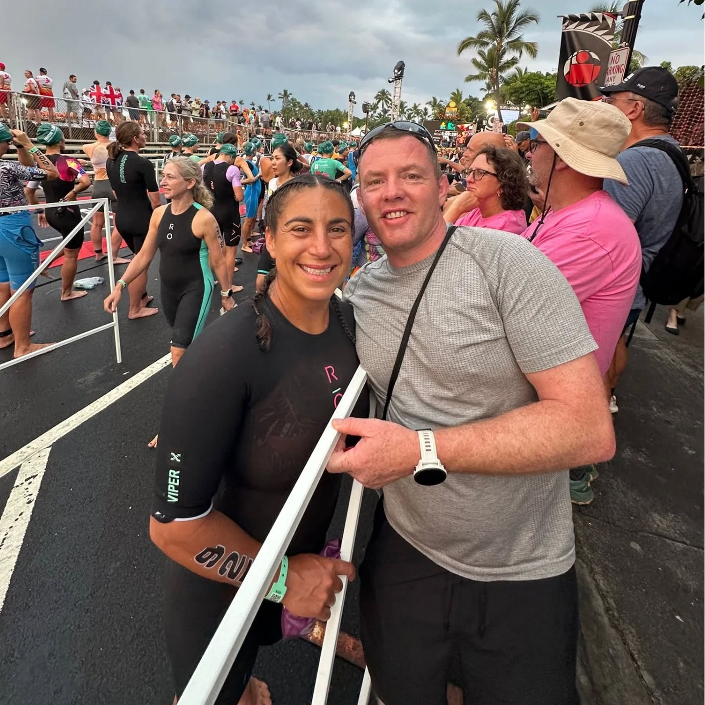
Qualifications
My coaching is built on both lived experience and professional education, so clients get support that feels personal, practical, and informed.
Certificate in Personal Training
Gym-based coaching, movement quality, strength, and confidence building
Diploma in Sport Nutrition
Accredited nutrition coaching focused on performance, habits, and real-life fuelling
Ironman University Endurance Coach
Structured support for runners, triathletes, and performance-focused athletes
Les Mills instructor, yoga training, and group fitness background
Coaching that blends performance, technique, and sustainable training habits
Coaching Approach
I believe good coaching never stands still. I keep learning so I can better support every person who trusts me with their journey.
Endurance coaching, race preparation, and practical programming for real people with real lives.
Technique, confidence, and strength work designed to support long-term progress and injury prevention.
Simple and realistic nutrition guidance that helps clients fuel better, recover better, and feel better.
Ready to start?
Whether you are completely new, returning to training, or working toward a performance goal, this is a space where you can feel supported from the beginning.
Let’s talk
Ask questions, share your goals, and find out what kind of support would fit you best.